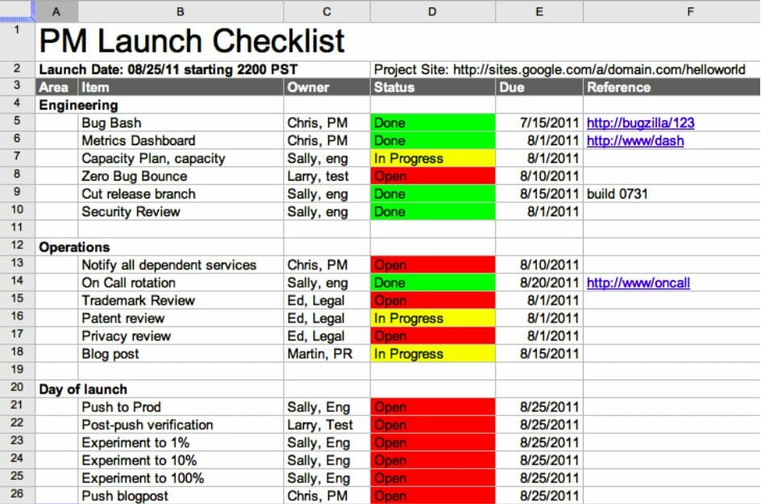

注：【】部分为笔者心得，非原文摘抄。
- 有效的交付过程分为 7 个阶段
- 确定正确的产品方向；
- 尽可能清晰详细地定义产品；
- 设计用户体验；
- 做一些基础的项目管理工作；
- 开始测试；
- 建立衡量产品成败的指标；
- 制订市场营销和公关方案。
- 成功交付的关键在于快速且充分地满足客户需求。
- 团队必须以客户而不是以竞争为导向。——杰夫·贝索斯
- 团队应该始终积极地去解决客户的问题，而不是紧盯竞争对手，被动地做出反应。
- 不要只想着解决简单的问题，越困难的问题越值得去努力。——谢尔盖·布林
- 仅仅解决真正的客户问题是不够的，你得确保这是个很多客户都存在的大众问题。
- 团队一定要有自己的使命。如果你没有清晰地阐述使命则会导致失败，因为你的团队、组织和投资人根据自己对使命的不同理解而各自为战，从而导致冲突、混乱和痛苦。
- 卓越的使命需要符合三点要求：
- 能唤起人们的兴趣；
- 提供言之有物且能指明方向的原则；
- 适合印在 T 恤上。
- 需要的是一个能反映代表性产品或服务的使命，而不是一个面面俱到的使命。
- 当你开始思考公司、客户和竞争这三大问题时，需特别注意如何才能长期为客户提供比竞争对手更优质的产品。
- 当迭代越小越快时，你甚至不需要花大力气去猜测客户的需求，而是更多按照客户告诉你的去做，这样成功的可能性更大。
- 创建并维护 FAQ 文档有两大好处。第一，它能节省你大量回复邮件的时间，还能抵御一些内部责难；第二，当你的客户支持团队和科技写作团队开始整理所有面向公众的内容时，FAQ 将是一个很有价值的资源。
- API 最重要的作用是明确系统的各个边界，而明确的边界有助于人们了解各类功能或输出分归哪方负责。
- 工程团队是你的左膀右臂，别让任何事情影响到你们的关系。
- 如果说目标是告诉别人你要做什么，那么非目标则是告诉别人你不要做什么。
- 用例是指用简要的语句来描述那些用户必须执行的操作，用户场景则是指用叙述故事的方式来描述用户是如何体验产品的。
- 灾难并不可怕，可怕的是没有任何准备。
- 如果产品有硬伤，你将很难得到工程团队的认可。
- 并不需要团队的每一个人都相信你的规划是完美的，而是需要他们同意朝一个方向前进并把产品视作一个极有可能成功的实验。
- 找一批现存的或者潜在的客户，向他们介绍你的产品设想和原型，并听听他们的反馈。这个测试可以避免你做出一个没人想用的产品或者遗漏一些核心功能。
- 团队会轻易陷入一场为莫须有的客户问题构建完美解决方案的狂欢中，所以你需要这个客户测试来验证你的目标、非目标以及优先级是否合理。
- 重心一直放在“客户是谁”、“客户有什么问题”和“我们该如何解决”上，才是真正正确的做事方法。
- 产品定价的三个基本方法：
- 按成本定价；
- 按价值定价；
- 对比定价。
- 一些针对高科技产品的宽泛的行之有效的定价建议：
- 分析竞争对手；
- 调研客户愿意支付多少钱购买产品；
- 简化初始定价以及降低用户理解成本；
- 把已经满足需求的定价再提高一些；
- 不要在定价上争吵不休。
- 真实的用户和真实的数据永远比预测更有效。
- 交付卓越产品是指交付卓越的用户体验。
- UX（User Experience，用户体验）关注的是用户如何完成任务以及该如何优化向用户展示信息的方式。
- 信息架构研究的是信息该如何在用户界面上呈现，而不关心底层的数据结构。
- 好的视觉设计师会基于栅格系统排列按钮、文本及其它控件以增强产品体验的一致性。
- 清晰地阐述我们的业务目标以及它们之间的优先级，之后将权利交给设计团队，让他们以此为基础进行一系列的优化。
- 设计、业务好工程团队必须紧密合作，共同定义每种角色的优先级。
- 面对一个新的设计时你应该先问自己三个问题：
- 谁是最重要的用户？
- 这类用户必须完成的最重要的任务是什么？
- 这个任务在用户界面中是最重要且最简洁的部分吗？
- 对用户要求得越多，用户完成的能力和意愿就越低。
- SHE 简单化框架（<简单法则>，前田约翰）：
- Simplify，简化；
- Hide，隐藏；
- Embody，附加。
- 可发现性是指用户发现行动点的能力。
- 西方文化中信息的优先级是从左上角到右下角递减的。
- 让事物变美观的一个最好的办法是让它们简洁、平滑。
- 要想将软件做好，你需要让设计师先阐明惯例，然后通过检查来确保他们始终遵循。
- 如果你对一个特性的可发现性和可用性存在疑问，一个最好的办法便是让真正的用户来测试。
- 一些使用户界面更易于理解的惯例：
- 所有主要按钮都应尺寸放大且配色一致；
- 一个用户界面中只有一个主要按钮；
- 使用一组按钮来表示“是”或“否”这样的选择；
- 不同优先级的行动点使用不同的样式；
- 当一个流程有 3 或 4 张页面时，告诉用户目前处于哪一步以及共有多少步；
- 在你的应用程序中使用下划线或者其它配色来强烈区分链接和普通文本；
- 遵守互联网 CSS 标准。
- 与每一位独一无二的设计师的沟通建议与变通：
- 以用户的口吻说话；
- 以提问的方式建立共识；
- 反复讲述业务目标，如果有些目标相互冲突，则反复讲述它们之间的相对优先级；
- 用数据说话；
- 提供一些竞争对手或类似体验中运作良好的案例。
- 制作线框图时需关注以下基本原则：
- 只制作用户界面中相关部分的原型；
- 总是使用完整的、经过适当编辑的文本；
- 控制花在视觉设计上的时间；
- 使用灰度色，不要使用其它颜色；
- 预期你的线框图会发生很大改动；
- 当心视觉花招。
- 如果发现需要协议大段文字来解释某个特性该如何使用，你就应该重新设计这个特性。
- 构建原型时需要同时考虑新、老用户分别会看到什么内容，同时确保设计出来的效果能够真正实现。
- 要想在交互上取得突破，你需要低成本的项目管理。
- 三项低成本的工作：
- 创建一张简单的计划表并持续维护；
- 跟踪 Bug、观察燃尽图、计算实现 ZBB（Zero Bug Bounce，零 Bug 率，指没有任何阻碍发布的 Bug 再被引入）的日期；
- 谨慎管理你的依赖。
- 不要在周五的时候把新软件推送到服务器上。
- 只跟踪完成任务所需剩余时间是敏捷管理的一个原则。
- 管理依赖唯一能做的便是将风险最小化，而最小化这些由依赖引发的风险有一些关键技巧，称为“五个如果”：
- 如果去除它也可以运转，那就去除它；
- 如果内部能构建，那就内部构建；
- 如果必须添加一个依赖，那就趁早添加；
- 如果必须添加一些依赖，那就依靠它上一个已构建的版本；
- 如果交付得早，被依赖伤害的可能性就小。
- 伤害团队的一个最佳方法是要求团队成员去做一些他们并不引以为豪的事情。——《人件：富有成效的项目和团队》
- 显著提升产品质量的 8 个主要步骤：
- 坚持测试驱动开发；
- 围绕优秀的测试主管组建测试团队；
- 亲自评审测试计划和测试用例；
- 自动化测试；
- 虔诚地推行内部试用（Dogfood）；
- 开展找虫总动员；
- 勤勉且有条理地处理 Bug；
- 任命可信测试者以构建最后一道防线。
- 测试主管是软件发布质量的主要负责人，同时也是产品经理、工程主管和市场主管的关键合作者。测试主管需要确保测试用例撰写准确、覆盖完整，且被正确执行。
- 一流的人雇佣一流的人，二流的人雇佣三流的人。
- 检查测试用例是否包含下列描述性要素：
- 领域：描述哪部分的用户体验将被测试；
- 严重性：定义如果失败将此 Bug 归为哪个级别，通场 1-4 级；
- 前置条件：指定测试前必须做的事情；
- 需执行的任务：任务由多个步骤组成，任何步骤失败，测试都失败；
- 后置条件：描述应用程序在任务执行完毕后所处的状态。
- 团队主管可能不需要亲自编写测试自动化程序，但需要确保它正被不断地构建出来，因为你永远负担不起完成测试工作所需的全部人力。
- 把打算推向市场的软件先在公司内部试用。
- 强制你和你的团队使用自身研发的软件，体会用户的痛，能帮助你们逐步提升紧迫感，理解用户困扰。
- 让内部试用成为你团队文化的一部分。
- 推行内部试用，可遵循以下最佳实践：
- 计划一次内部试用发布；
- 使其他试用者能够方便地提交 Bug 报告；
- 软件发布后应继续进行内部试用；
- 让进行内部试用成为企业核心价值观。
- 有助于找虫总动员获得成功的四件事：
- 设立奖项，提供物质激励；
- 在项目计划中增加找虫总动员这样一个关键事件，安排好时间以便整个团队了解何时可以参与；
- 将找虫总动员排进开发和测试日程表中；
- 感谢每一个 Bug，铭记“坏消息就是好消息”。
- 在对一个 Bug 分级时需考察以下三个方面：
- 频率；
- 严重性；
- 修复成本。
- 可信测试者是指在保密协议的约束下，在产品发布前使用产品内部试用版的用户。他们比你的团队有着更丰富的多样性，包括更多不一样的电脑和手机，更多不一样的期望，而且他们还不像你们那么懂技术。因此他们的反馈具有更大的价值。
- 让可信测试者们帮助我们改善产品可遵循的最佳实践：
- 让企业用户签署保密协议并提供正确的联系方式；
- 制作粗略的新手指南文档，其中包括已知问题的列表；
- 创建一个包含整个工程团队的邮件组/微信群；
- 让这些用户使用和工程师同样版本的试用产品；
- 调研可信测试者；
- 当产品更新时通知可信测试者们。
- 一个团队的能力怎么样，通常要看他们的量化数据表现怎么样。
- 优秀的量化指标应具备 5 个关键特点：
- 测量成本低廉；
- 测量可靠且可重复检验；
- 能频繁地测量，最好能实时测量；
- 团队能够根据它做出明智的改变；
- 专注于客户。
- 只有贴近客户的指标才富有意义且可被理解。
- 无法测量的东西也就无法提升。——爱德华兹·戴明
- 发布后需要跟踪的关键指标：
- 目标进度；
- 经营绩效；
- 系统性能。
- 确保发布质量的几个主要步骤：
- 对改动说不；
- 开启作战室；
- 营造紧迫的气氛；
- 核查发布清单；
- 撰写博文；
- 发布软件；
- 亲自验证软件；
- 应对发布带来的各种影响。
- 发布手中有的，而非脑中想的。
- 团队必须对自己开发的软件抱有自豪感。
- 建立一个 IPL（Immediately Post-Launch，发布后第一时间）修改的需求清单。你需要让团队认识到有些改动固然重要，但它不一定要在发布前完成，可以在发布成功后第一时间进行改动，这样团队会对产品更有信心，他们知道他们顾虑的东西将很快得到解决。
- 回归 Bug：重新打开的老 Bug，或者之前运行正常的功能现在运行失败。
- 开启作战室能促进团队的协作并消除信息的传递时间。
- 别人急躁之时正是自己保持冷静之刻。
- 凭借冲刺来完成项目没有什么不好，只要这样的冲刺不超过 1 个月时间，大多数团队成员和他们的家人还是可以接受的，特别是如果你还会补偿他们一定的休息时间。
- 狗屎三明治（The Shit Sandwich）：当你给员工反馈时，可以一开始先表扬他们（第一片面包），然后再给他们一些难以完成的挑战（狗屎夹心），最后提醒他们你有多么看好他们的能力（第二片面包）。——《一分钟经理人》
- 在最后冲刺期间你最需要做的事情便是确保你的相关方和支持团队都感受到了紧迫的气氛。
- 承认自己有所不知是心理走向成熟的标志。
- 要想出色地完成发布，你需要拟订一张发布清单，你的每个主管，从设计到测试，都需要在清单中列出各自需要负责的事项。 
- 建立一套机制来确保所有东西在发布前就已衔接完成并配置完好是极具价值的，这样你才不会把问题暴露给更多的用户。
- 不要选择在周五或者临近假期时发布。
- 版本验证测试（BVT，Build Verification Test）一般在新版本发布后进行。通过这轮验证，测试主管能确保推送到生产服务器上的版本是正确的，并且所有的配置文件都已推送成功并安装正确。
- 五项发布后需要做的事情：
- 应对回滚；
- 处理产品危机；
- 演示产品；
- 应对媒体；
- 庆祝发布。
- 只要成功回滚，发布就还没有失败。
- 最好的防守是制定周详的撤退计划。
- 如果可以回滚，你就能撤回对产品的改动，从容不迫地修复问题，然后再试一次。
- 做事之前，先做准备！
- 一个准备充足的产品应该拥有可以快捷关闭服务或者限制服务速率的软件开关。切记只要有可能就应该在实验性框架下发布软件，或者软件中带有可禁用特性的标记。
- 尽早做好应对灾难的准备。
- 需要呈指数级地增加退避（backoff）时间，并总是随机修改它的值，这样退避的行为才不会造成更深层次的破坏。
- 确保在交付之前建好退避机制。
- 退避时间是指网络节点在向服务器发送请求时产生冲突后再次发送请求需等待的时间，如果每次退避时间都一样，那么之前冲突的请求又会再次冲突。
- 提前建立有效的沟通渠道。
- 危机是最好的教学材料。
- 如果存在持续的风险，就需要确保所有相关人员都知道这个风险可能引发的问题。
- 危机应对“剧本”：
- 0-5 分钟
- 不要惊慌；
- 检查这是否是一起突发事件并评估影响范围；
- 确定这个问题不止在你这里出现；
- 发起电话会议；
- 打开一个 Bug；
- 知会危机扩大邮件组/微信群成员；
- 5-30 分钟
- 问：“我们能回滚吗？”
- 推迟任何公关计划；
- 知会相关方；
- 知会社区；
- 保持 Bug 的更新；
- 寻找并引入专家协助团队解决问题；
- 知会管理层；
- 31 分钟及以后
- 定期发送状态更新，当有人请求时也可马上发送；
- 不要把客户晾在一边，控制客户对问题的期望，并保持与他们的沟通，尝试在承诺的基础上再多提供一些优化；
- 继续解决问题；
- 确保满足从事问题解决的人们的需求；
- 建立轮班制度，不要让一个开发者持续工作 24 小时；
- 采用变通或应急方案；
- 收尾以及撰写事故调查报告
- 检查修复情况、确认修复结果；
- 如果你或者你的公关团队认为有必要对外公布此次危急情况，准备一篇博客/公众号文章；
- 在团队路线图中增加任务项并把他们的进展同步给老板或投资人；
- 撰写事故调查报告（COE，Cause of Error，也称故障原因）：
- 发生了什么事？
- 谁受到了影响？
- 问题是何时出现，又何时终结了？
- 为什么会发生这件事情？
- 如何防止这类问题再次发生？
- 0-5 分钟
- 演示需要直截了当，演示的目的在于用讲故事的方式来讲述产品，并在每一步凸显产品使命。演示必须简洁，最好不要超过 10 分钟，这样才能保持观众的注意力。如果把演示制作成视频放在博客/公众号里，则这个视频绝不能是 10 分钟这种长度，需要被压缩在 90 秒以内，否则访客会很快失去注意力。
- 演示也需要遵循既定的策略：先从问题和使命讲起，不断陈述使命（这招很管用，别怕啰嗦），在演示开始时一定要让用户明白他为什么应该关心这个产品。接下来以讲故事的方式把演示串起来。
- 用“想象一下”或“人们常会碰到一个问题”这样的句子来开讲故事，观众会很快被你勾住。
- 如果演示中出现一些小问题，跳过它，你还可以趁大家注意力分散的时候重申你的核心使命。
- 做得最好的演示需要花费数周时间进行准备。
- 如果你要做一场全程直播的产品演示，那么再多的准备都不为过。你必须为每一段产品演示都准备截图或者视频，因为你永远预测不出所有可能出错的情况。
- 针对用户或媒体的反馈，评论务必清晰、实事求是，同时你应在评论中表明身份，这样会显得你坦率，别人也更愿意接受你。
- 如果在产品发布后的几周时间里密切倾听用户的声音，便能基于真实用户的反馈来调整产品路线图。
- 不要在发布的过程中举办庆祝会，最好等团队度过手忙脚乱的局面后，再庆祝发布以及感谢他们做出的努力。
- 嘉奖先进个人很重要，但公开嘉奖具体的某些人既有好处也有风险，这样做之前你需要想清楚有什么好的理由支持你公开嘉奖。
- 公开嘉奖杰出个人，可以让团队明白做到什么程度才算杰出，这样他们就有了明确的前进目标。
- 不要因为你的考虑不周而令团队成员蒙羞。
- 团队主管可以对成员的职业生涯和幸福感施加可观的影响，如指明正确的项目方向、识别问题以及给予渴望获得认可的成员以赞誉。
- 项目集经理的职责重点在于整合不同团队和不同工作职能。
- 产品经理的职责更偏重软件的业务方面，专注于品牌管理、定价、市场进入策略等。
- 项目经理的主要职责在于排定项目计划和协调团队工作。
- 最好的工程经理常常是由那些由于热爱团队、善解人意、精通交付并乐于构建卓越产品而晋升到该职位的资深程序员担任。
- 雇佣主管的原则：
- 雇佣比你聪明的人；
- 雇佣懂得自己不是来当老板的人；
- 雇佣表达清晰、言之有物的人；
- 雇佣用数据说话的人；
- 雇佣充满活力的人。
- 四个通常考虑收购一家公司的目的：
- 知识产区；
- 人才；
- 客户；
- 防御。
- 考虑收购之前，需要简单计算一下是自己构建的成本低还是买别人的成本低：多少个工程师需要花多少个月才能开发、测试并交付类似的软件？将所需工程月数乘以一个工程师满负荷工作一个月所需的成本，再减去因整合被收购公司的知识产权而产生的成本——这个成本也可以用工程人月为单位来衡量。最后计算出来的结果就是你可以接受的收购金额，这里假定进入市场的时间并不重要。
- 收购的陷阱和最佳实践：
- 计划将你团队的部分人员调入被收购的团队；
- 计划整合产品；
- 了解之前所有的交易和负债。
- 不要低估文化适应的重要性，也不要低估新人适应领导风格所需要的时间。
- 与远程工程师协作的 9 点建议：
- 不要租用工程师；
- 充分沟通；
- 不要外包设计或 PM 角色；
- 适应文化差异；
- 构建清晰的需求；
- 忍受时差，通过任何方式会面；
- 委任得力的主观；
- 大量出差；
- 与远程团队共饮。
- 利用由协作产生的动力的最佳方式是组建一支包含至少 3 名工程师的拥有共同纲领的团队。
- 为团队定义清晰地共同纲领能帮助他们减少对未来的焦虑。
- 为了弄清楚在团队中应该扮演的角色是什么，你必须敏锐地意识到团队需要什么。
- 发现手头上的事情是乱糟糟的，你需要立刻做两件重要的事情：
- 不要和团队说你们的产品一团糟这种话；
- 做一个选择：你是打算延期交付以解决这种混乱状况，还是承认它的存在然后正常交付。
- 尽量不要买服务器。
- 任何学到的关于服务器的知识都会在 6 个月内过时，因此优秀的工程师会尝试学习如何避免去做运维的琐事。
- 如果你想追求可扩容性（或称可伸缩性）、可扩展性（或称可升级性）以及其它的秀的特性，面向服务是一个值得遵循的好方法。
- 尽可能少开会，但不要不开会。很多时候通过一封优质的邮件就能完全避免开会。
- 如果不能将事物简单地表达出来，你就没有真正地理解它。——阿尔伯特·爱因斯坦
- 作为一位出色的领导者，如果想让上司更认可你并获得更高的薪水，你需要不断向团队传递清晰的、具体的信息，使他们明确方向、坚守使命。你还必须做好向上管理，这意味着你要向比你更忙的、有更多邮件需要处理的人们传达与决策或进展相关的大小事项。
- 写邮件最主要的目标应该是清晰、简要地传递单个信息。
- 优秀的记者会将他们想表达的最重要的事情放在文章开头。
- 精确增量表达法是一种让数字更易被理解的技巧，适合应对那些超快速阅读的人们。示例：
- 将某个变量增加或减少 XXX（差值），即从 XXX（开始值）增加/减少到 XXX（结束值）。
- 精确增量表达法是一个能极大提升明晰度的有力工具。
- 在优秀的发件人写就的邮件中，各点之间的行间距是很有意义的。适当留白能帮助你清晰分隔出邮件中重要或特殊的部分。
- 高级管理者向一线员工写邮件时就得多花点笔墨以照顾员工的感受。
- 【容易传递焦虑的人很难成为优秀的领导。如果你想称为好的领导，就得学会自己化解焦虑，并给予团队以面对困难和未知的信心。】
- 在站会中每个人应该汇报下列信息：
- 我昨天做了什么；
- 我今天要做什么；
- 我是否遇到阻碍。
- 头脑风暴会需要遵循的 4 个基本规则：
- 不要在头脑风暴过程中批评他人的想法；
- 说“是的，嗯……”
- 通过结构化来促进讨论；
- 在头脑风暴结束时明确告知大家头脑风暴结束了。
- 组织好会议需要遵循的 4 个最佳实践：
- 会后立即发出主题纪要；
- 允许改变开会的目的；
- 拒绝在团队会议中发泄负面情绪，但允许在 1 对 1 会议中发泄；
- 使用鱼骨图等辅助工具解决问题。
- 做好演示的技巧：
- 将演示时间控制在 15 分钟内；
- 永远传达且只传达一个信息；
- 讲故事；
- 制作“综述单页”；
- 重点演示用户体验；
- 极度专注倾听；
- 如果一页幻灯片上不只是一幅图加一句话时，将这页的信息要点放在标题里；
- 如果你发现先前的技巧并不适用，就把信息要点放在标题里；
- 如果没有模板，就使用基本的商学院的蓝色背景，配上黄色和白色的字；
- 考虑投影仪的实际呈现效果；
- 阅读并遵循《写给大家看的设计书》（罗宾·威廉姆斯）一书中提及的基本视觉设计原则；
- 阅读并遵循《The Visual Display of Quantitative Information, 2nd Edition》（爱德华·塔夫特）一书中提及的信息展示原则；
- 不要使用“构建版本”这类字眼；
- 不要使用红色来代表除危险或糟糕之外的任何意思。
- 讲故事需要做到 5 件事：
- 将创意与个人生活关联起来，使听众产生代入感；
- 让观众跟着你的节奏走；
- 提供一个人们都能理解的具体例子；
- 描述你将要解决的问题；
- 描述你的解决方案将如何提升用户的生活品质或工作效率。
- 综述单页应该包含四块内容：
- 你想讨论的东西是什么；
- 机会；
- 提供的解决方案；
- 成本和实施时间表。
- 要想交付卓越的产品，你需要让团队成员体验到参与感和发言权。
- 更好的团队决策制定过程是在早期就让所有团队成员都参与进来。
- 将决策的理由透明，将决策的时间透明，将团队参与决策的途径透明。
- 通过谈判而不是击败别人来达成共识。
- 帮助你回归讨论目标正轨的方法：
- 聚焦于促进；
- 先寻求理解，再寻求被理解。——《高效能人士的七个习惯》，史蒂芬·柯维
- 不要假设一场冲突的另外一方一定就是一个讨厌鬼，考虑另外一些可能的背景情况。
- 三个客观化的方法:
- 不说“你”或“我”；
- 聚焦在角色模型上，而不是人上；
- 使用客观指标。
- 经过实践检验的交付建议精髓：
- 平衡交付、质量和影响、团队这三者的关系；
- 应对随机情况；
- 妥善地管理好你的精力；
- 让合适的人做合适的事；
- 咽下狗屎三明治。
- 五条应对公司优先级变化的基本策略，按优先级排列：
- 弄清楚公司优先级的变化是不是真的；
- 更改产品的表达方式以迎合变化；
- 尽可能小地改动；
- 请求通融；
- 忍。
- 因为不可能做完团队需要你做的所有事情，所以你需要优先做最应该做的事情，且不要在意没有做完所有事情。
- 首先应该做那些只有你能做的事情，这种工作方式有助于将你起到的作用最大化并防止你成为阻碍者。
- 管理你的精力，而不是时间。（Manage your energy, not your time. <哈佛商业评论>）
- 在你断定自己精神抑郁或缺乏自信之前，先确定你实际上没有被一群白痴包围。——威廉·吉布森
- 一个出色的主管不会什么东西都交付，他只交付正确的软件。如果你想让别人看到一个卓越的、专业的你，就必须慎重考虑时间的投入方式。
- 十大交付原则：
- 你不是来当老板的；
- 从用户角度出发；
- 用独特的方法解决很多人都有的大问题；
- 坏消息就是好消息——杰克·韦尔奇；
- 先寻求理解，再寻求被理解——史蒂芬·柯维；
- 构建最简洁的可用的产品；
- 交付手中有的，而非脑中想的；
- 无法测量的东西就无法提升——开尔文勋爵；
- 你不可能完成所有工作，所以你应首先做那些只有你能做的工作；
- 永远走在交付的康庄大道上。
- 团队不可或缺的工件：
- 轮值表；
- 使用 Wiki 搭建的联络簿，用于遇到故障、突发事件或问题时寻找相关负责人，应包括法务、公关、市场、产品团队、工程团队、网络运维、负责生产和维护基础设施的负责人；
- 描述使命的语句；
- 关于未来两年的清晰策略；
- 一页简要说明产品的人物、事件、原因、时间和方法的文档；
- 产品需求文档，或叫功能规格说明；
- 新闻稿；
- 线框原型图；
- 内部 FAQ 文档；
- 沟通文档，包括关键信息、有潜在危险的问题和对这些问题的回应；
- 发布时穿得 T 恤；
- 包含测试时间的开发计划表；
- 未来两年的路线图；
- 内部用户列表和迁移时间表（适用于基础设施项目）；
- 可信测试者列表（适用于面向外部的产品）；
- 特性需求列表，并将内部和外部客户中呼声最高的三个特性需求高亮；
- 开放问题列表，并清晰标记这些问题的状态；
- 进行中的会议纪要，最要建立一个文档保存项目所有的历史会议纪要；
- 发布计划或发布规程；
- 记录什么特性在什么时间发布的生成变更列表，在排查客户问题时特别有用；
- 对增长预期和硬件配置需求提前进行计划的生产设计文档；
- 专利注册文件、商标注册文件和版权申明文件；
- 隐私说明；
- 出色的数据指标，包含内部的状态面板和一些供外部消费的清洗过的数据指标；
- 为幻灯片、演示、评审、发布准备的产品截图和视频；
- 团队本季度目标以及上季度目标完成情况；
- Bug 状态面板和阻碍每个发布的 Bug 列表；
- 错误原因报告或事后调查报告；
- 会议纪要和团队周会、用户界面评审、产品评审、工程评审、Bug 处理、法务评审、业务拓展周会以及客户支持碰头会的时间计划表。